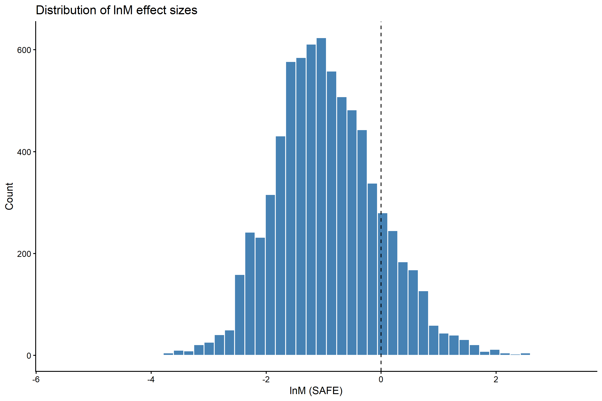
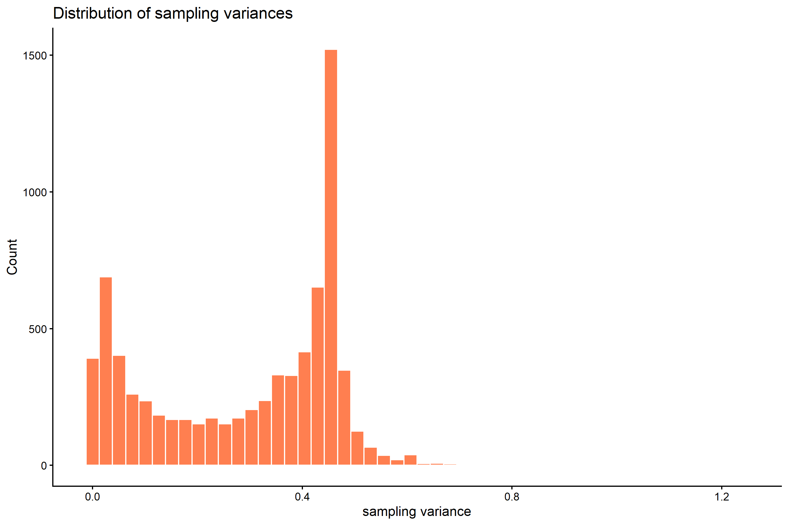
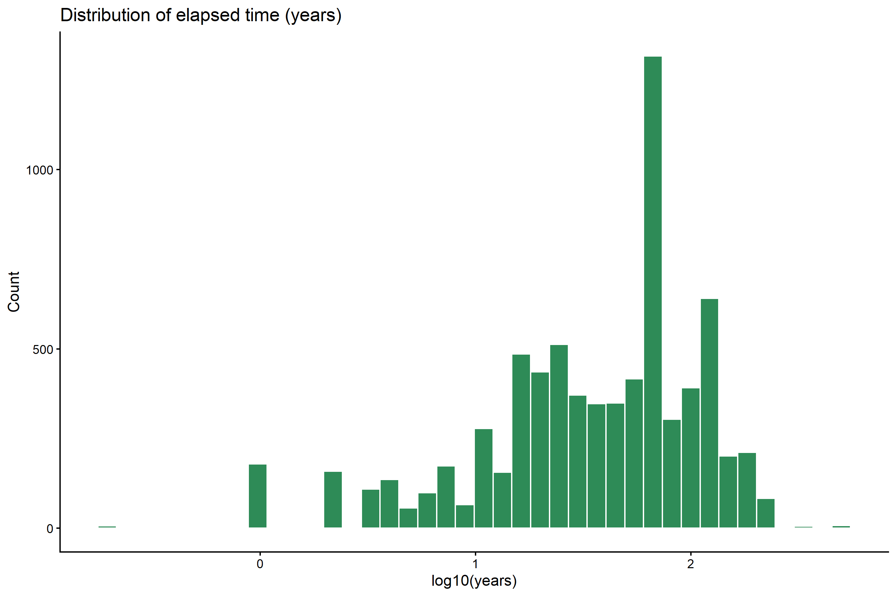
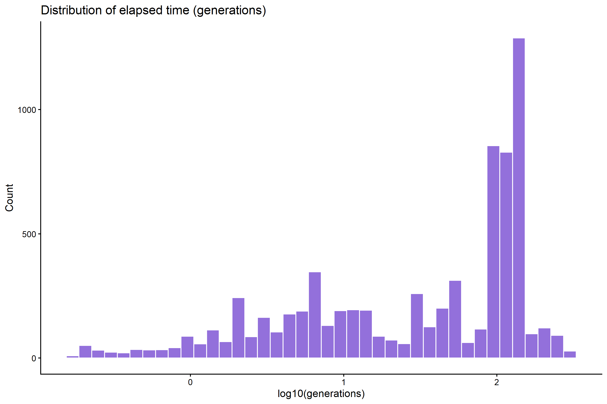
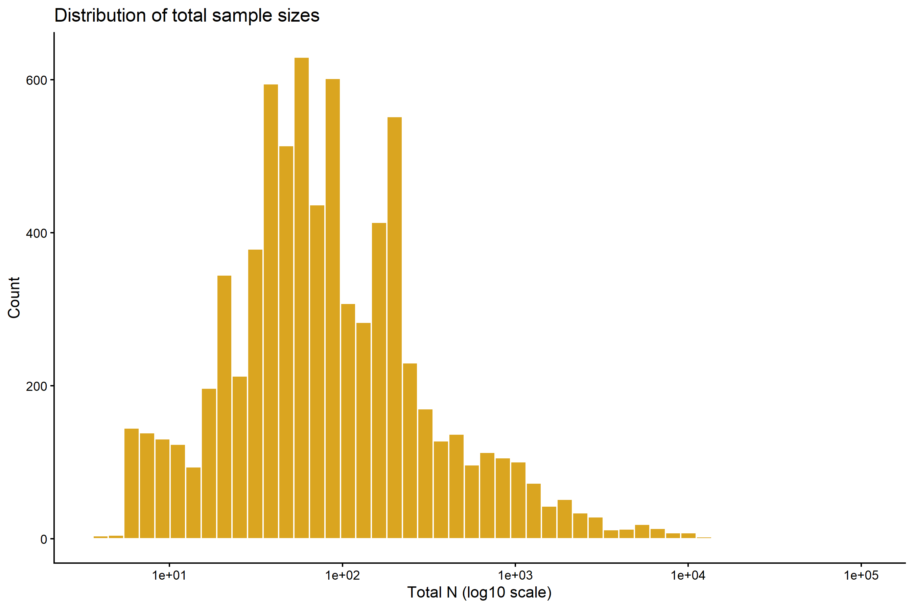

Code
source(here::here("R", "00_packages.R"))
source(here::here("R", "01_paths.R"))source(here::here("R", "00_packages.R"))
source(here::here("R", "01_paths.R"))dat_es <- readRDS(here::here("outputs", "effect_sizes", "proceed_lnm_safe.rds"))
cat("Contrasts:", nrow(dat_es), "\n")Contrasts: 7511 dat_es |>
dplyr::summarise(
k_contrasts = dplyr::n(),
n_studies = dplyr::n_distinct(ref_id),
n_systems = dplyr::n_distinct(sys_id),
n_species = dplyr::n_distinct(sp_ncbi),
n_allochronic = sum(design == "Allochronic", na.rm = TRUE),
n_synchronic = sum(design == "Synchronic", na.rm = TRUE)
)dat_es |> dplyr::count(disturbance, sort = TRUE)dat_es |> dplyr::count(design, sort = TRUE)dat_es |> dplyr::count(trait_type, sort = TRUE)dat_es |> dplyr::count(taxa, sort = TRUE)dat_es |> dplyr::count(genphen, sort = TRUE)dat_es |> dplyr::count(env_change, sort = TRUE)dat_es |> dplyr::count(data_type, sort = TRUE)dat_es |> dplyr::count(transf_data, sort = TRUE)dat_es |> dplyr::count(data_scale, sort = TRUE)ggplot2::ggplot(dat_es, ggplot2::aes(x = yi_lnM_safe)) +
ggplot2::geom_histogram(bins = 50, fill = "steelblue", colour = "white") +
ggplot2::geom_vline(xintercept = 0, linetype = "dashed") +
ggplot2::labs(x = "lnM (SAFE)", y = "Count",
title = "Distribution of lnM effect sizes") +
ggplot2::theme_classic()
ggplot2::ggplot(dat_es, ggplot2::aes(x = (vi_lnM_safe))) +
ggplot2::geom_histogram(bins = 50, fill = "coral", colour = "white") +
ggplot2::labs(x = "sampling variance", y = "Count",
title = "Distribution of sampling variances") +
ggplot2::theme_classic()
dat_es |>
dplyr::filter(!is.na(log10_years)) |>
ggplot2::ggplot(ggplot2::aes(x = log10_years)) +
ggplot2::geom_histogram(bins = 40, fill = "seagreen", colour = "white") +
ggplot2::labs(x = "log10(years)", y = "Count",
title = "Distribution of elapsed time (years)") +
ggplot2::theme_classic()
dat_es |>
dplyr::filter(!is.na(log10_generations)) |>
ggplot2::ggplot(ggplot2::aes(x = log10_generations)) +
ggplot2::geom_histogram(bins = 40, fill = "mediumpurple", colour = "white") +
ggplot2::labs(x = "log10(generations)", y = "Count",
title = "Distribution of elapsed time (generations)") +
ggplot2::theme_classic()
dat_es |>
dplyr::filter(!is.na(n_total)) |>
ggplot2::ggplot(ggplot2::aes(x = n_total)) +
ggplot2::geom_histogram(bins = 50, fill = "goldenrod", colour = "white") +
ggplot2::scale_x_log10() +
ggplot2::labs(x = "Total N (log10 scale)", y = "Count",
title = "Distribution of total sample sizes") +
ggplot2::theme_classic()
tab_overview <- dat_es |>
dplyr::summarise(
k_contrasts = dplyr::n(),
n_studies = dplyr::n_distinct(ref_id),
n_systems = dplyr::n_distinct(sys_id),
n_species = dplyr::n_distinct(sp_ncbi),
n_allochronic = sum(design == "Allochronic", na.rm = TRUE),
n_synchronic = sum(design == "Synchronic", na.rm = TRUE)
)
readr::write_csv(tab_overview,
here::here("outputs", "tables", "descriptive_overview.csv"))
for (var in c("disturbance", "design", "trait_type", "taxa",
"genphen", "env_change", "data_type", "transf_data", "data_scale")) {
tbl <- dat_es |> dplyr::count(.data[[var]], sort = TRUE)
readr::write_csv(
tbl,
here::here("outputs", "tables", paste0("counts_by_", var, ".csv"))
)
}
cat("Descriptive tables saved to outputs/tables/\n")Descriptive tables saved to outputs/tables/